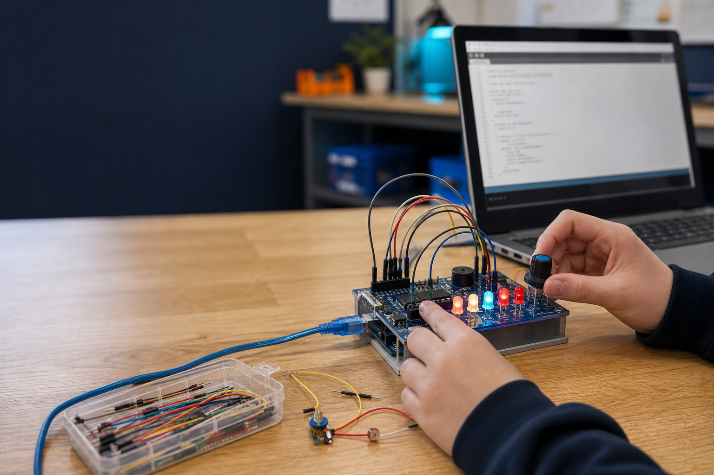

1. Learn
Read three taught theory sections and inspect the linked learning diagram.
Year 7–8 Technology · ten-week coding mission
Learn how control systems work, build all sixteen authorised ThinkerShield challenges, then design and test an alarm that protects something you care about.

The challenge
Each module teaches three precise ideas, checks understanding, guides one written response and sends you into practical work.
How the course works
Use the fixed ThinkerShield inputs and outputs through the same four-step learning routine.
Read three taught theory sections and inspect the linked learning diagram.
Complete the questions beside each section and return precisely when an answer needs work.
Use the guided response and practical activity to test the control-system idea.
Keep the checked answers, guided responses and project activities together in My folio.
Student evidence. Responses and checked answers save on this device. My folio brings the guided responses and project activities together for review, backup and printing.
Current dates, marks, rubric and submission route remain Teacher to confirm.
Course pathway
Input, processing, output and the fixed hardware map.
Sketch structure, digital states and timing.
Algorithms, pseudocode, flowcharts and branching.
Analogue values, mapping and calibration.
LDR readings, thresholds and response loops.
Button input, if/else and stored state.
Buzzer frequency, mapped pitch and sequences.
Arrays, iteration, functions and subsystems.
Criteria, system planning, code and test cases.
Systematic debugging, evaluation and backup.
Student evidence
Responses and checked answers save on this device. My folio brings all 30 guided responses and ten project activities together for review, backup and printing.
Current NSW syllabus
The strongest alignment is with TE4-DIG-02: using data and digital systems to code, design and produce projects. The unit also develops safe technology use, planning, systems thinking, communication and evaluation. See Teacher resources for the source-bound mapping.